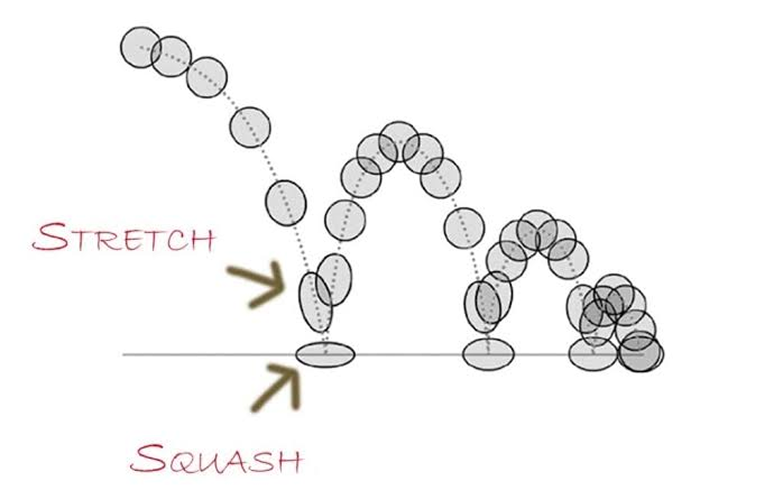
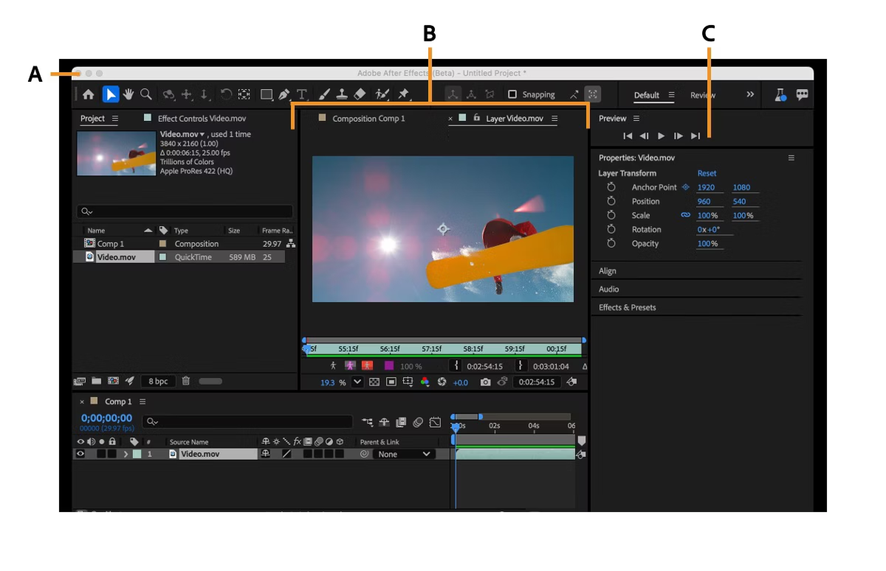

Motion Verse
Motion Verse
Motion Verse
Motion Verse
Motion-дизайн — це дисципліна, що поєднує графічний дизайн та часову шкалу. Це перехід від статики до динаміки, де кожна зміна стану об'єкта несе комунікативний зміст. Основою нашої професії є фізика сприйняття: ми не просто рухаємо пікселі, ми створюємо відчуття ваги, інерції та емоційного відгуку у глядача.
Цей принцип є фундаментом моушн-дизайну, який надає об'єктам ілюзію ваги, гнучкості та живої природи. Під час руху або зіткнення об'єкт деформується: він розтягується в напрямку руху та стискається при ударі об поверхню, зберігаючи при цьому свій загальний об'єм. Саме завдяки цій техніці анімація перестає бути "пластиковою" і стає фізично відчутною для глядача.

Робочий простір Adobe After Effects може здатися перевантаженим, але він побудований на логіці трьох рівнів: проекту, сцени та часу

Чим, на вашу думку, моушн-дизайн кардинально відрізняється від статичного?